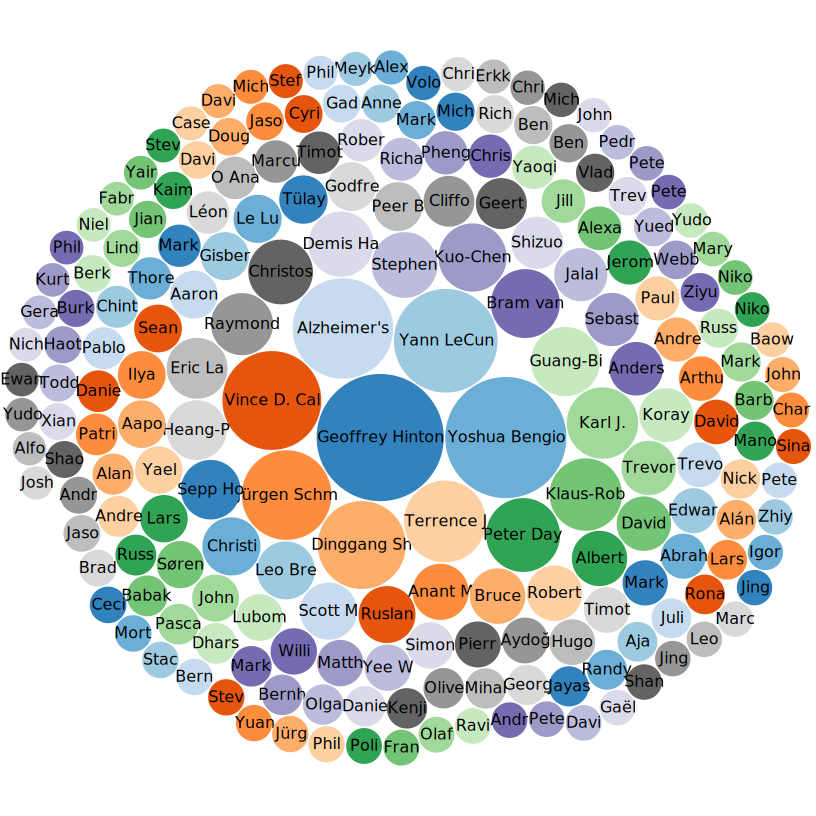

Making Scholarly Articles Findable: Towards Ensuring F of FAIR Data Principles
John Samuel
WikidataCon 2021, 31st October, 2021
Scholarly Article (Q13442814)
Article in an academic publication, usually peer reviewed
scientific article
academic paper
Scientific conference paper (Q10885494)
conference article
scientific conference article
Preprint (Q580922)
prepublication
Question: How to ensure the findability of scholarly articles on Wikidata?
main subject (P921): Is this the missing link between Wikidata and Wikipedia?
References on 'Wikidata' article in English Wikipedia
Derived statements of Wikidata (Q2013): main subject of
Scholarly articles related to Wikidata and Wikipedia
Analysis of 'machine learning (Q2539)' articles on Scholia: Publications per year

Analysis of 'machine learning (Q2539)' articles on Scholia: Author Score
Scholarly articles on diseases
Scholarly articles on heart diseases
Scholia Statistics (30 October 2021)
Count
Description
13,281,103,649
Total number of triples
284,753,078
Citations
37,403,646
Scholarly articles
31,946,128
PubMed ID
27,186,838
Items with a DOI
17,702,984
Links from works to their main subjects
1,488,514
Links from people to employers
Question: How to add main subjects (P921) to scholarly articles on Wikidata?
Example:
1. Declarative Machine Learning Systems (Q108514939)
2. SystemDS: A Declarative Machine Learning System for the End-to-End Data Science Lifecycle (Q108515519)
Example:
1. Declarative Machine Learning Systems (Q108514939)
2. SystemDS: A Declarative Machine Learning System for the End-to-End Data Science Lifecycle (Q108515519)
main subject: machine learning (Q2539)?
Example:
1. Declarative Machine Learning Systems (Q108514939)
2. SystemDS: A Declarative Machine Learning System for the End-to-End Data Science Lifecycle (Q108515519)
main subject: declarative machine learning (Q108515195)?
Example:
1. Declarative Machine Learning Systems (Q108514939)
2. SystemDS: A Declarative Machine Learning System for the End-to-End Data Science Lifecycle (Q108515519)
main subject: ???
API and Tools
Wikidata Mediawiki Search API
Get me all scholarly articles: haswbstatement:P31=Q13442814
Get me all scholarly articles without main subject: haswbstatement:P31=Q13442814 -haswbstatement:P921
Get me all scholarly articles without main subject and that contains the phrase "machine learning": haswbstatement:P31=Q13442814 -haswbstatement:P921 "machine learning"
API and Tools
Wikidata Query Service
Get me all scholarly articles: ?item wdt:P31 wd:Q13442814
Get me all scholarly articles without main subject: ?item wdt:P31 wd:Q13442814. MINUS {?item wdt:P921 []}
Get me all scholarly articles without main subject and that contains the phrase "machine learning": ?item wdt:P31 wd:Q13442814; rdfs:label ?label. MINUS {?item wdt:P921 []} FILTER(CONTAINS(?label, "machine learning"))
Add main subject "machine learning (Q2539)" to items whose titles contain the phrase "machine learning": python itemSubjector.py-na -a Q2539
Add main subject "machine learning (Q2539)" to items without any main subject whose titles contain the phrase "machine learning": python itemSubjector.py -w -na -a Q2539


{kind=link}